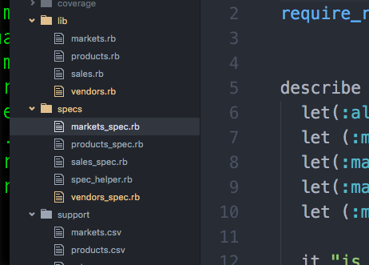

Word Guess: Very similar to the game hang man with a Pacman theme. Colorize gem was used.View here.Static-Site: First time use of HTML and CSS for profile website.
Farmer's Market: Program that can look up csv file contents and relation to other objects in the system.